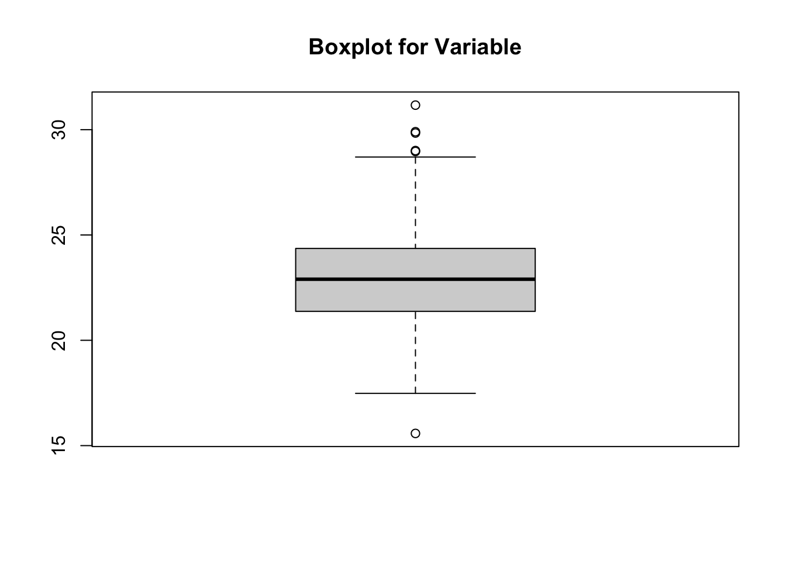

In this module we will briefly describe the idea of data quality control, a common practice that allows us to identify errors or anomalies within our data before performing any posterior analyses.
10.2 Filtering Duplicates
In plant breeding we will typically have multi-trait or gene data collected by accession. In a data frame, we may have an ID or Taxa column, followed by columns with the trait or gene information. Before performing any type of analyses, it is important to identify and filter duplicates if there are any, as these could skew our results. For this example we will work with a generated file based on the data set used for Module 9.1. In this case, * Taxa is our genotype identifier column.
# Load the necessary libraries# 'tidyverse' includes 'readr' (for read_csv) and 'dplyr' (for glimpse, etc.)library(tidyverse)
── Attaching core tidyverse packages ──────────────────────── tidyverse 2.0.0 ──
✔ dplyr 1.1.4 ✔ readr 2.1.5
✔ forcats 1.0.0 ✔ stringr 1.5.1
✔ ggplot2 3.5.2 ✔ tibble 3.2.1
✔ lubridate 1.9.4 ✔ tidyr 1.3.1
✔ purrr 1.0.4
── Conflicts ────────────────────────────────────────── tidyverse_conflicts() ──
✖ dplyr::filter() masks stats::filter()
✖ dplyr::lag() masks stats::lag()
ℹ Use the conflicted package (<http://conflicted.r-lib.org/>) to force all conflicts to become errors
# We start by loading our raw data filebarley_data_file_path <-"data/icarda_barley_2019_pheno_raw.csv"# Defining our file pathbarley_pheno_data <-read_csv(barley_data_file_path) # Loading into data frame
# We filter the data frame to keep only one entry for each IDdata <- barley_pheno_data[!duplicated(barley_pheno_data),]data
Many times, we will want to remove rows with missing data. Missing values can distort certain calculations. Although some functions in R have an option to automatically remove NA’s before performing the calculation, many times it is necessary to remove them beforehand.
# We will work with our duplicate filtered data frame from last section.# complete.cases() allows us to filter any rows with missing valuesdata <- data[complete.cases(data),]data
Identifying and filtering outliers helps improve the accuracy and reliability of our results. There are many sources of outliers or anomalies, human error, measurement errors, or simply nature doing its thing. However, even if we don’t want to remove these data points, it is important to identify them first to then decide what the following steps will be. Outliers can skew important statistical measures and correlations, leading to misleading conclusions. Moreover, many machine learning algorithms, such as regression or PCA, are very sensitive to outliers. For examples, outliers in PCA can influence the principal components and clusterization, leading to misclassification.
For the following example we will analyse the * Taxa in our filtered data set.
# We can use a simple boxplot to explore the overall structure of our data and identify outliersareaBP <-boxplot(data$Area, main ="Boxplot for Variable")

# Saving our boxplot in an object allows us to extract the outlier values as a vectorareaBP$out
# We can then choose to remove these outlier entries from our data frame# The idea here is that we keep the rows where the `Area` value is not in our outliers vectordataArea <- data[! data$Area %in% areaBP$out,]dataArea